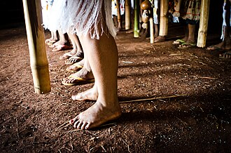

Sobre o Nhandereko
Nhandereko ou Nhanderekó é muito mais que uma simples tradução; é o conceito fundamental e a espinha dorsal do 'modo de vida do povo Guarani'. Ele representa a própria essência da existência e o relacionamento sagrado entre a vida e o universo que a cerca. Para os Guarani, Nhandereko é a manifestação de um território vivo. É a profunda interconexão entre os corpos, o espaço e o ambiente, onde toda a vida — os rios, as florestas, as plantas e os animais — é uma parte integral e inseparável do seu ser. Viver o Nhandereko é honrar essa totalidade.
Perguntas Frequentes e Relatos Guarani
O que é ser Cacique de uma Aldeia?
O Cacique é o chefe administrativo e político da aldeia, sendo também o integrante mais experiente e o representante maior da organização social da comunidade.
Os jovens e adolescentes têm estímulo para se tornarem Caciques?
Sim. O exemplo de lideranças jovens, como o Cacique João Antônio Tapajós, que começou no movimento indígena desde cedo (seu pai era cacique) e é coordenador do Conselho Indígena Tapajós Arapiuns (PA), demonstra esse estímulo. Eles veem nos mais velhos "espelhos e apoios", observando como lideram e tratam as pessoas.
Como surgiram/surgem as Aldeias (segundo a ciência)?
As populações tupis (ancestrais de alguns povos) estavam em crescimento e foram margeando os rios ou a costa litorânea, em busca de terras férteis para a agricultura. Esse fenômeno começou há cerca de 2,1 mil anos e atingiu seu pico no ano 1000.
Como funciona o cultivo de alimentos nas aldeias?
Entre as diferentes populações indígenas, a roça é uma atividade praticada por homens e mulheres, mas as atividades que realizam não são as mesmas.
Como as comunidades lidam com roupas?
O vestuário indígena é bastante variado. Há povos que usam basicamente tangas e cintos, e há indígenas que se vestem "à maneira ocidental" no dia a dia, usando trajes típicos em solenidades e festas.
As aldeias têm autorização para caçar?
Não. A caça no Brasil é proibida desde 1976. Há apenas uma exceção para caçar Javaporco, com a autorização do IBAMA.
Como é a ligação das aldeias com os esportes?
Existe um forte vínculo com o esporte e a cultura, como demonstrado pelos Jogos dos Povos Indígenas no Brasil, um encontro esportivo e cultural realizado desde 1996, geralmente nos dias 19, 20 e 21 de abril.
Como as comunidades lidam com as limitações impostas pelo governo?
A paralisação dos processos de demarcação e o abandono de medidas de proteção territorial pelo governo federal resultaram no aumento da violência contra os povos indígenas. No entanto, a luta e a resistência dos povos indígenas exibiu grande ousadia política nos últimos anos.
Quantas pessoas vivem atualmente na Aldeia Paranapuã?
Embora dados específicos de cada aldeia não sejam levantados, o IBGE (2022) aponta que a quantidade de indígenas vivendo em áreas rurais caiu de 63,7% em 2010 para 46% em 2024.
Como ocorre a divulgação dos Artesanatos nas aldeias?
O cadastramento dos indígenas na Subsecretaria do Trabalho Artesanal nas Comunidades (Sutaco) oportunizou a comercialização dos produtos em feiras e o reconhecimento do artesanato como profissão.
Como as comunidades indígenas lidam com a tecnologia?
Muitas aldeias indígenas já tiveram acesso à tecnologia através de celulares, computadores, TV e videogames. Mesmo em locais distantes onde o acesso à internet não é possível, os aparelhos são usados para jogos, fotografias ou para produzir vídeos.
“A meu ver, a tecnologia, principalmente o celular: ele veio para ajudar bastante, inclusive as comunidades que vivem distantes das cidades. Conseguimos nos comunicar com os parentes de outros Estados e até de outros países. Ajuda bastante, desde que saiba utilizar de forma correta, essas são as orientações que passamos para os jovens da comunidade.”
**Caso queira fazer uma visitação ou conhecer esta ou outras aldeias, entre em contato através da nossa página de Etnoturismo ou Fale Conosco.**